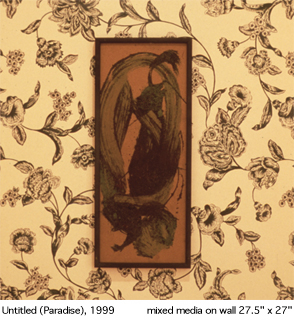
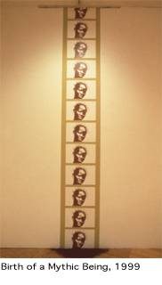
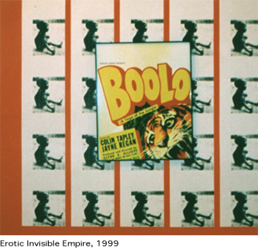

Since the early 90s Odili Donald Odita's work has consistently employed
found, mundane materials and images culled from diverse sources including
art, cinema, advertising, fashion as well as print and, electronic media.
His works rely on processes involving repetition, reuse, recontextualization
and remix. Consequently his work has tackled western stereotypes, myths
and other forms of social transaction -as found, common ideas, images,
and forms of social exchange that specifically shape notions of race
and gender in America.
The Invisible Empire which was presented at Gallery 101 in Ottawa in
1999 enacted a powerful and elegant synthesis of these elements. Significantly,
the works hover between single unrelated pieces and installations, refusing
both yet operating between them through temporary and meaningful collusions.
While
they function as discrete proposals, combined, the works open up a performative
space of inquiry into the mythic constructs of modernist painting and
the black body. Most of the works engage painting as idea, discipline,
language or history. "Untitled (Paradise)," 1999, features
a small vertical rectangular dark mixed-media painting set against a
light floral wallpaper square. It exists through a tension provoked
by the juxtaposition of a 'high culture' framed work, the product of
the gestural bravado of an expressionist stroke of male artistic genius.
and 'low culture' feminine, flowery, decorative mass-produced wallpaper.
But we witness a further implosion within the framed component: it is
nothing more than a metaphor of painting. A metaphor which debunks painting
by reducing the very foundations of the Romantic notion of sublime,
namely nature and landscape, reduced to materials and motifs.
On an adjoining wall, "Object. 1999," acts as a visual anchor,
working with the gallery's architecture to define the axis of experience.
The work consists of six framed black monochromes lit by bare, clear
light bulbs suspended from black wire and presented on a rectangular
background made of the repetition of a black and white film still. In
this jungle image, a startled white woman beams her flashlight up to
the buff bare chest of a black male. She appears fully, and properly
dressed, diminutive and marginal. Yes, she is the one who, eyes wide
open, lights up the scene. In marked contrast, the unclothed black male
occupies half the image. But his physical presence is just that. Matter
moving to the rhythm of some obscure determination. Eves closed, zombie-like,
intentionality, and signifiers of identity are denied him: he is an
object. It is against this background that the six monochromes must
be read. Significantly, they replicate what is going in the image: a
black flash-like surface is highlighted by a directed bare light source.
Object thus visually articulates the relationship between the myths
of Western painting and of the black body.
Directly across the room, "Cutout," 1999, consists in a small
black circular monochrome painted onto the gallery wall. Svnecdochically
related to the black body of Object, it is the object defined by its
trajectory of the pocket light's beam arrested on and by that black
body. While the mage repeated in Object clearly foregrounds the stereotypical
association of whiteness with light and vision, and of blackness with
darkness and blindness, those tired, yet still potent clichés,
are poetically undone by the power of the small black circle. Isolated
against the wall's vast expanse of whiteness. Cutout shows Western othering
constructions of blackness for what they are: abstracting, reductionist,
instrumentalist, commodifving projection sort of desire. It also reverses
these reading by positioning the black circle as a porthole, and thus
a privileged position of vision. Most importantly, it allows for a fully
embodied black subject to willfully emerge and move freely across the
white cube of the gallery.
"Birth
of a Mythic Being," 1999, also foregrounds notions and conditions
of emergence. In
this mixed media work, the image of a young African woman, culled from
a second-hand hardcover anthropology book and colour-photocopied in
brown on sheets of white paper, is pasted totem-like from floor to ceiling
onto a greenish-light-brown vertical strip painted onto the gallery
wall. Both
in title and in spirit, it acknowledges Adrian Pipers 1970s "Mythic
Being" which is often only known through texts and reproductions.
Discourse, reproduction and birth are thus literally and symbolically
linked. This rhythmically repeated rectangle flattens and misquotes
Judd's minimalist sculptures, reducing them to the frames of a film
strip. Furthermore, the stylized repeated brown image confronts the
legacy of Warhol and his socialites. On the floor, a small mound of
mulch, a synthetic brown earth synonymous with North American suburb,
acts as the "natural" birthplace of the announced mythic being.
The piece thus debunks the foundation of the black body's mythic status,
a mythification achieved through the manufacturing and dissemination
of specific and unfounded kinds of images, discourses and sciences -
issues which Keith Piper has pointedly addressed in Fictions of Science
(1996).
Directly across the room, "Couture (Me, Jane)," 1999, a digitally-manipulated
image shows Kate Moss acting out the role of Jane, the jungle-wear,
barely-clad, wide-eyed white woman with suitably wild hair and sparsely
there makeup. In the context of the exhibition, this small work reinforces
the otherness of women, strengthens the association of women and nature/primitive
(a category shared with the black body; remember Freud's definition
of female sexuality as black continent), while it also distances that
otherness by showing it as a put-on. Couture (Me, Jane) thus provides
a 90's equivalent of the scene enacted in Object. The wilderness set
and the black body arc evacuated: luxury commodities of the exotic kind
have taken their place around the white female body.
"Erotic Invisible Empires," 1999, is a very powerful piece
that enlists an "emergency red" background with poetic precision.
Against
it, a framed fragment of a Hollywood B-movie poster, salvaged in a flea
market, appears before the repeated image of an abandoned, starving
and crying African child, an image made all too familiar in the 60s
and 70s in Biafra, crisscrossed with the reality of AIDS. civil and
ethnic war, drought and famine, and re-articulated since in a seemingly
endless list of crisis zones. Across
the room, a large hard-edge work made of acrylic-latex wall paint applied
on the gallery wall clearly positions Odita's work in the broader context
shaped by the practice of contemporary conceptual artists who use Modernist
painting as a reservoir of available forms and motifs to be reinvested,
as a repository of looks to be pillaged, misquoted, misused and subverted.
A seeming example of hard-edge abstraction, "Intermission,"
1999, is further displaced by its title which humorously positions it
as an in-between, a retreat.
The Invisible Empire operates in mixed border zones of discourses and
practices by complicating binary structures of otherness. The exhibition's
greatest contribution is its original and productive conflation of myths.
By enunciating the successive leaps of faith by which painting was made
to meet the sublime, which in turn was linked to the unconscious which,
in turn, the primitivist fantasy conflated with the other, the artist
succeeds in freeing both, and in suggesting viable positions and strategies
for Others to reclaim painting and redefine society.
Sylvie Fortin is the Curator of Contemporary Art at
the Ottawa Art Gallery, Ottawa, Canada.
This essay was originally published in NKA, Journal of Contemporary
African Art, No. 11/12, Fall/Winter 2000.
Sylvie Fortin
|